创建github账户
注册github，创建个人账户
[有需要可使用谷歌的页面翻译]需要验证邮箱，此时注意邮箱信息，（验证信息可能在邮箱垃圾箱中）


建立本地仓库与远程仓库的连接
在本地创建一个ssh key
相当于在你的电脑中获取一个密匙，类似平常的验证码，获取后，输入到github账户里，则你的电脑就和github账户联系到一起了
- 首先，在桌面（或者其他文件夹都ok）右键打开 Git Bash Here，到bash控制台，出现如下
 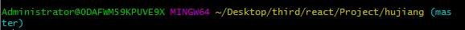
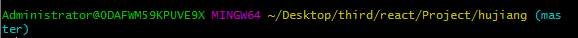 - 这一栏 开始是你的计算机的名字
- @后边的内容是你的计算机型号，很多时候有的人打开之后@后边是乱码，这个时候也不要在意，因为有些电脑型号是中文的，可能在显示的时候出现了问题，不影响你后期的操作
- 黄色，文件夹名称
- 蓝色，当前所在分支名称（创建之后才有）
- 获取密匙，输入以下命令ssh-keygen-t rsa-C "your_email@youremail.com"
- 然后一路回车或yes
- 得到钥匙的随机图像（说明密匙创建成功）


- 在前面打开bash的文件夹中找到 .ssh文件，（若在桌面打开的，则进入 C:\Users\Administrator\.ssh），找到id_rsa.pub文件，用记事本打开，复制里面的内容（即密匙），如下所示。ssh-rsa AAAAB3NzaC1yc2EAAAADAQABAAABAQC8h5j+/a2ANbzZhPuYWnqjgXwkBTBXOr/jgxZKZqB/gnKriwlaT3XVQVryFJ8Y9TrbIAetA736Jq6WSTt+5I2OsPIfxzQ9a91PI9UHl716HnwugD1pVFqxrwdrK5Psti4n1Q3L/iWkEp0guSxlKH4AP90xv+KoSKpi4mNPaIb4+dhE+hsKZIUfbioz7tEHLSq114aHREA6J+8EjgTLuX2xGthXjuFfsG2syBMV4Iec7qIZQtD1L7JK1cYhfWhrgTZg936hULT6+i7RnL53h1zKi015KZGtiquaJYvNHScK/PnV2azDgIiQQzUtf4B/pBKLGNZINrOZwKL+3y7fH8QB 1416271094@qq.com
- 到github账户上添加这个钥匙 （在Settings---> SSH and GPG keys）里面，点击New SSH key
 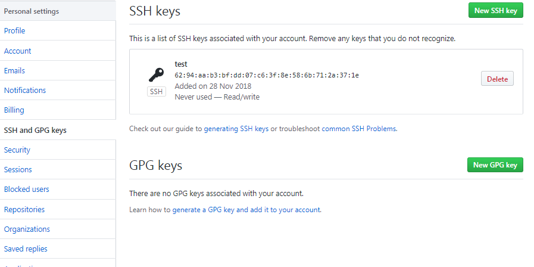
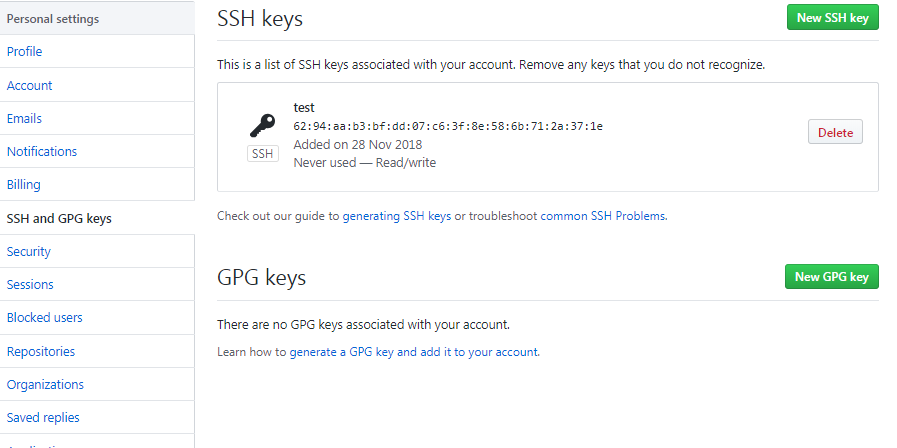 - 复制到key里面，title可以自己起随意的名字，然后Add SSH key，ok。
 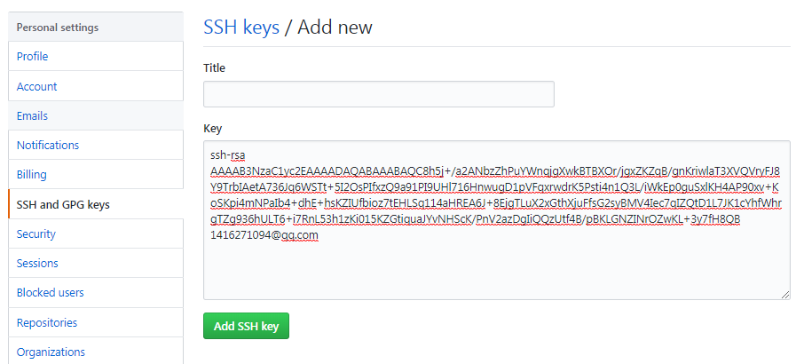
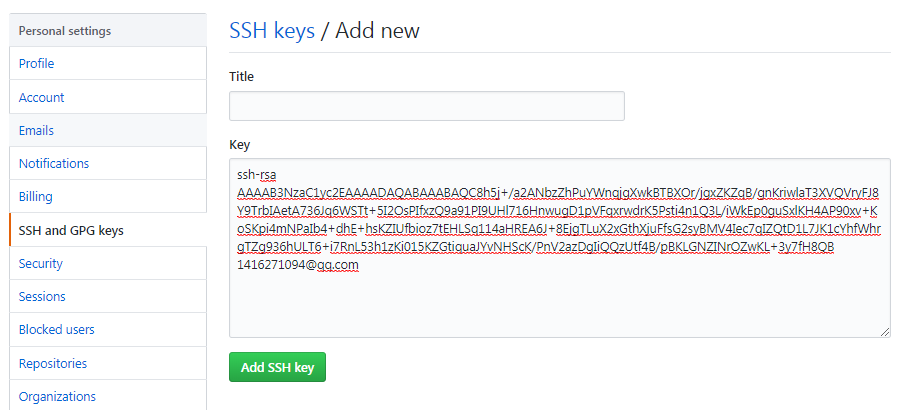- 回到bash控制台,然后输入以下代码，来检查是否成功绑定。//第一次绑定的时候输入上边的代码之后会提示是否continue，在输入yes后如果出现了：You've successfully authenticated, but GitHub does not provide shell access 。那就说明，已经成功连上了GitHub。
- 设置用户名和邮箱，输入以下代码，name最好和GitHub上边的一样，email是一定要是注册GitHub的那个邮箱地址 （遇到的问题，我的两个github账号都是同一个邮箱，报错，后面会说到）$ git config --global user.name "你的github用户名"$ git config --global user.email "你的github账号绑定的邮箱账号"
- 将项目库克隆到本地文件夹中，或者将本地文件添加到项目库中，（此时，先创建项目库）
创建项目库
右上角加号 new repository ,然后按步骤填写项目库名称，最后 create repository 就可以了
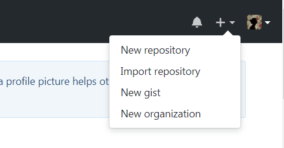
 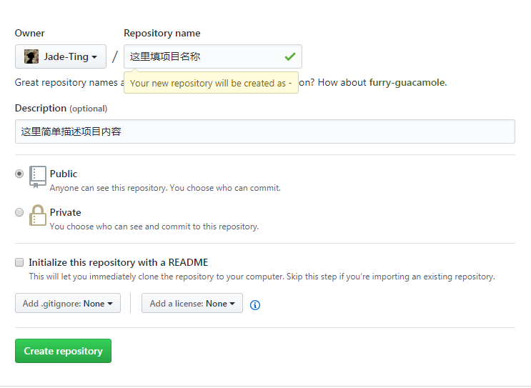
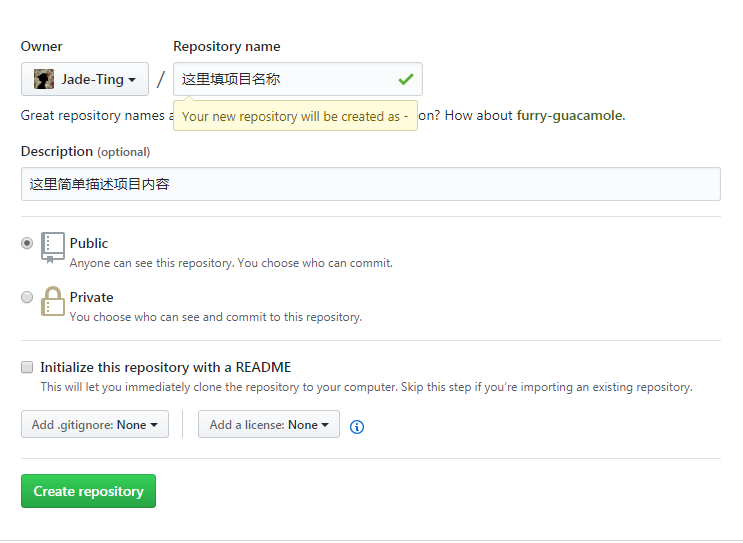拿到项目库地址
可以复制使用上面的https或ssh 地址，进行clone到本地创建文件夹
 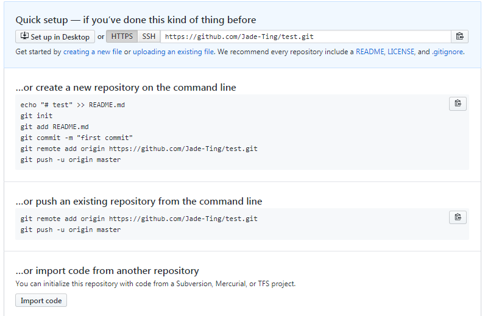
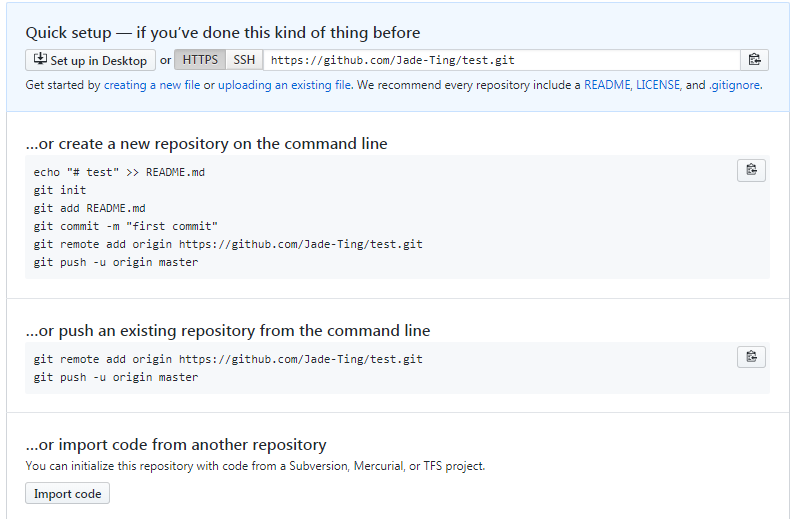将项目克隆到项目库中
自己在电脑任意盘中，新建一个任意文件夹，或者直接在任意盘中，打开 git bash
- 可以输入 ls 查看你目前所定位的文件夹中的文件有哪些，（可做可不做）ls
- 开始克隆！！！git clone https://github.com/....(也就是上面的项目库地址)会出现警告：warning: You appear to have cloned an empty.git,不要担心，这时候项目库的文件夹已经克隆到你的文件夹中啦~
- 然后 定位到 克隆下来的文件夹中，或者进入克隆下来的文件夹，再打开 git bash
- 将文件添加到缓存区git add . //添加文件夹中的所有文件到缓存区或：git add test.txt //添加test文档文件到缓存区
- 将缓存区里的文件提交到本地版本库（嗯嗯嗯，我也不是很懂这些名词，照做了，哈哈）git commit -m "这里写你的备注，可以记录刚刚提交的文件是什么文件之类的"
- 将本地项目推送到远程仓库git push origin master
- 嗯，如果上面推入成功就ok，若出现下面内容，就输入你的github账号密码，然后login
 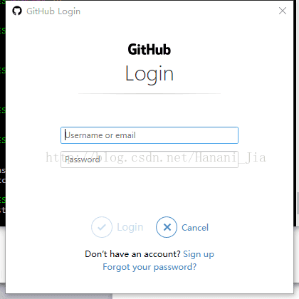
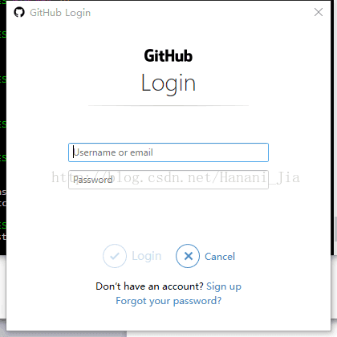 - 若出现下面，则失败,就再输入一次github密码
 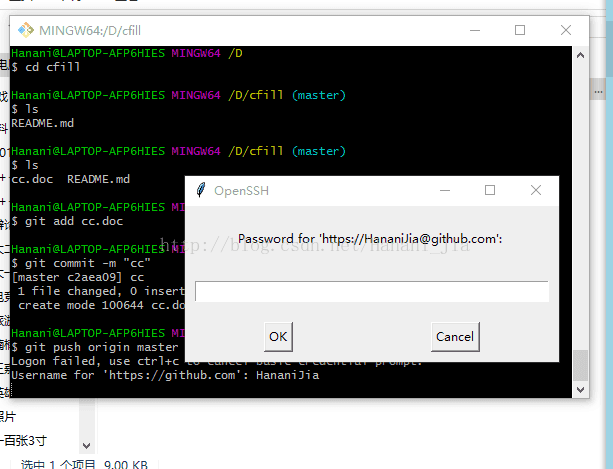
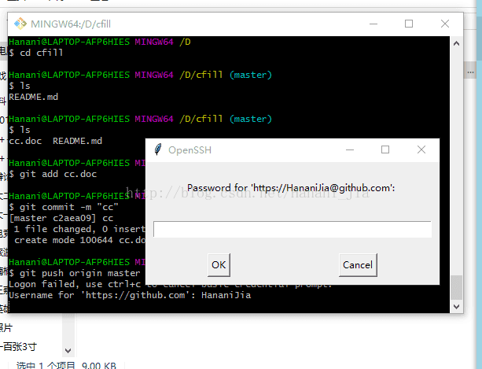 - 成功页面
 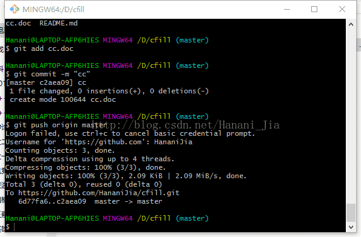
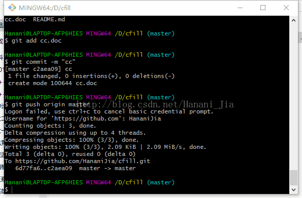
之后修改文件再提交的话，只需要 git add .、git commit -m " "、最后git push origin master，将你的代码提交就可以了。
将本地已经存在的文件中添加到github项目库中
本地文件已经存在了，现在要将本地代码推到git远程仓库保存。
- （先进入项目文件夹）通过命令 git init 把这个目录变成git可以管理的仓库git init
- 把文件添加到版本库中，使用命令 git add .添加到暂存区里面去，不要忘记后面的小数点“.”，意为添加文件夹下的所有文件git add .
- 用命令 git commit告诉Git，把文件提交到本地版本库。引号内为提交说明 （方便之后查看提交了什么）git commit -m "这是我第一次commit的内容"
- 关联到远程库git remote add origin 你的远程库地址地址如：git remote add origin https://github.com/OneEightZeroSix/hujiang.git
【特别提醒】
- 我在本次操作中，在执型 git add .的命令时就已经报错
 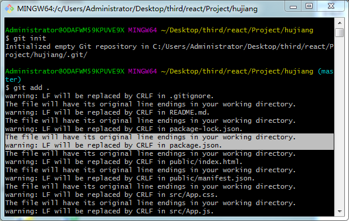
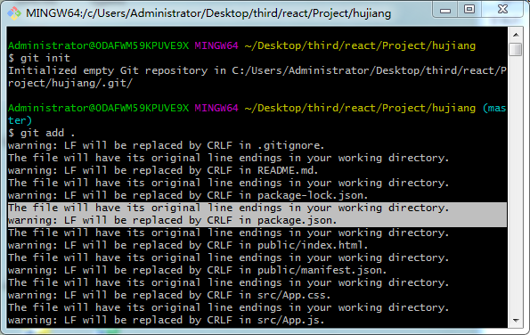 - 然后，查看了本地工作区、暂存区中文件的修改状态git status
 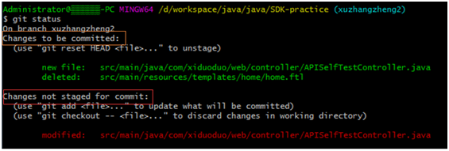
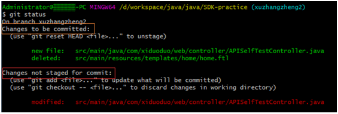 - 从图中我们可以看到有一条红色和两条绿色得提示。-
- 第一条绿色提示的前缀为newfile，表示为新增XXX文件。
- 第二条绿色提示得前缀为deleted，表示为删除了XXX文件。
- 橙色框框选的部分提示Changes tobe committed ，含义为：以下文件已存入暂存区，在提交到本地仓库时会将这些变更提交到本地仓库中。
- 最底下红色提示的前缀为modified，表示为修改XXX文件。
- git status命令就可以看到你本次修改（新增、删除、修改）中涉及到哪些文件，同时也可以看到已经存入暂存区中发生修改变更的文件，便于检查具体修改了哪些文件，以免出现疏漏。
- 再次连接到远程仓库git remote add origin https://github.com/OneEightZeroSix/hujiang.git
- 再执行git add .
- 提交到仓库git commit -m "这是我的项目"
- 推到分支中(不报错就完成)git push origin master
报错：403错误
关于用了两个github账号，新旧账号邮箱地址是一样的，虽然查看本地仓库的用户和邮箱都是新账号的，但是push的时候一直出现403错误 ，大概意思就是，不能将当前内容推送到旧的那个账号上
网上有其他解决方式，我是~
到电脑的控制面板 控制面板\用户帐户和家庭安全\凭据管理器 进入编辑，把账户密码改成现在使用的github的账户密码
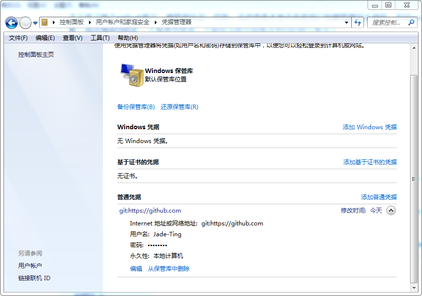
git查看和修改用户名和邮箱地址
用户名和邮箱地址的作用
- 用户名和邮箱地址是本地git客户端的一个变量，不随git库而改变。
- 每次commit都会用用户名和邮箱纪录。
- github的contributions统计就是按邮箱来统计的。
查看用户名和邮箱地址：
$ git config user.name "你的github用户名"
$ git config user.email "你的github账号绑定的邮箱账号"
或全局配置
$ git config --global user.name "你的github用户名"
$ git config --global user.email "你的github账号绑定的邮箱账号"
修改用户名和邮箱地址：
注意:输入的时候用户名和邮箱不用引号
$ git config user.name "name"
$ git config user.email "email"
或全局配置
$ git config --global user.name "username"
$ git config --global user.email "email"
如果上面的命令错误，出现了--repalce-all 这个东西。
可以尝试使用：
$ git config --global --replace-all user.email "username"
$ git config --global --replace-all user.name "email"
查看git设置列表信息
$ git config --list